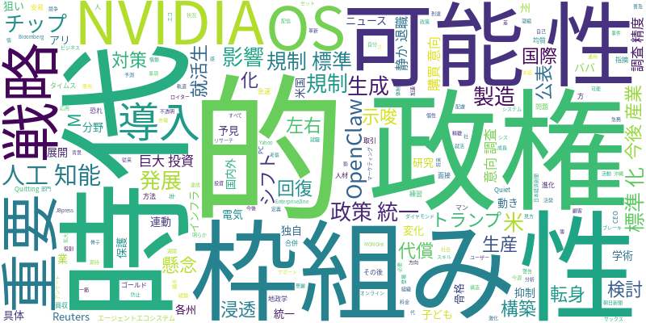

☁️ 今日のトレンドワード

📰 今日のピックアップニュース (10件)
米政権、AI規制で統一枠組みへ
米国政権がAI（人工知能）政策における統一的な枠組みの構築を目指している。これにより、各州が独自に進めるAI規制の標準化を図り、AI開発・利用における予見可能性を高める狙いがある。国際的なAI規制の動きと連動し、今後のAI産業の発展に影響を与える可能性がある。
AIシフト支える巨大投資
NVIDIAの新チップ登場やアリババの日本展開など、AIシフトを加速させる国内外の巨大投資が目立った。製造業分野では、AI技術の活用とそれを支えるインフラ投資が活発化しており、今後の産業構造の変化を示唆している。AI開発競争の激化と、それに対応する企業戦略が重要となる。
トランプ政権、AI対策骨子公表
トランプ政権がAI（人工知能）対策の骨格を公表した。特に、子どもの保護や電気料金の抑制といった具体的な検討事項が盛り込まれている。AIの悪用防止や、AI普及に伴う社会的な影響への配慮がうかがえる。今後のAI政策における具体的な方向性を示すものとなるだろう。
AI、購買意向調査で高精度
AI（人工知能）を用いた学術研究が、購買意向調査において90%という高い精度を達成した。これはAI技術の目覚ましい発展を示しており、マーケティング分野への応用が期待される。より精緻な顧客分析や予測が可能になり、ビジネス戦略に革新をもたらす可能性を秘めている。
米、AI規制で統一枠組みへ
米国政権がAI（人工知能）政策における統一的な枠組みの構築を目指している。これにより、各州が独自に進めるAI規制の標準化を図り、AI開発・利用における予見可能性を高める狙いがある。国際的なAI規制の動きと連動し、今後のAI産業の発展に影響を与える可能性がある。（Reuters配信）
NVIDIA、OS企業へ転身か
NVIDIAがOpenClawをAIエージェントエコシステムのOSと位置づけた背景に迫る。チップ製造からOS企業への転身とも取れる戦略は、AI開発の進化とエコシステム構築の重要性を示唆している。企業は「OpenClaw戦略」をどのように導入するか、その検討が急務となる時代が来ている。
AI提供方法が生産性左右
30年ITインフラに携わってきた経験から、PCでもAIでも、時代が変化しても「どのように提供するか」がその後の生産性を大きく左右すると論じる。AIの導入・運用においても、単に技術を導入するだけでなく、ユーザーへの提供方法やサポート体制が重要となる。組織のIT部門の役割が再定義される。
AI時代、静かな退職の代償
「静かな退職（Quiet Quitting）」という働き方がAI時代においてどのような代償をもたらすのかを考察。AIの進化により、従来の働き方やスキルセットでは対応できなくなる可能性を指摘し、AI時代に生き残る人材とそうでない人材の差が拡大することを警告している。自己成長の重要性を説く。
M&A回復、AI懸念が影
ゴールドマン・サックスのCEOは、M&A（合併・買収）取引の回復はAI（人工知能）への懸念や地政学的な問題により、依然として厳しい状況にあるとの見方を示した。AIの将来的な影響や国際情勢の不透明感が、企業買収・合併市場にブレーキをかけていることを示唆している。
生成AI、就活生に浸透
生成AIが就職活動において急速に浸透し、面接練習などに活用されていることが明らかになった。しかし、その安易な活用は就活生の個性を均質化させる恐れも指摘されている。AIを賢く利用しつつ、自分らしさを失わないことの重要性が問われる。
今週のAI・テック業界は、AI規制を巡る各国・地域の動きが活発化している点が注目されます。米国では政権がAI政策の統一的枠組み構築を目指し、州規制の標準化を狙う動きが見られ、トランプ政権もAI対策の骨子を公表しました。これにより、AI開発・利用における予見可能性が高まり、国際的な規制の方向性にも影響を与える可能性があります。一方、AI技術の進化は止まることなく、NVIDIAの新チップ登場や、AIリサーチの購買意向調査での高精度達成など、具体的な進展が報告されています。NVIDIAがAIエージェントエコシステムのOSと位置づける「OpenClaw」戦略は、チップ製造からOS企業への転身とも言える大胆なもので、AI開発のプラットフォーム化が進む兆しです。こうした技術革新と規制の動きが交錯する中で、企業や個人はAIの「提供方法」や「活用方法」を模索する必要があります。就活生の間で生成AIが浸透する一方で、その安易な活用による個性の均質化への懸念も指摘されており、AI時代に求められるスキルや働き方についても、改めて問い直されています。M&A市場へのAI懸念の影響など、AIは経済全体にも広範な影響を与え始めています。AIの発展は加速しており、その恩恵を最大限に享受しつつ、リスクを管理していくための継続的な議論と戦略が不可欠となるでしょう。